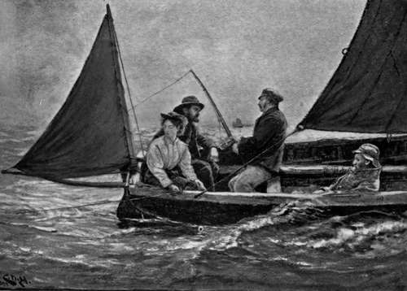

Salmon And Sea Trout
Description
This section is from the book "Sea Fishing", by John Bickerdyke. Also available from Amazon: Sea Fishing.
Salmon And Sea Trout
Salmon And Sea Trout are such undoubted sea fishes, coming into fresh water for breeding purposes, and possibly—in the case of salmon in very large rivers early in the year—for protection from seals, porpoises, and other enemies, that it seems right they should have a place in this volume. In dealing with the subject of fly fishing in the sea I have already mentioned a few places at which they have been caught in salt water. As a general rule salmon are too scattered to afford much sport. Compared with other sea fish, they are certainly scarce, and, all things considered, this is not surprising. Where they of necessity collect and are wedged up together, as in Loch Roag, Island of Lewis, a very long and narrow inlet, the angler has his finest opportunity. But in the broad mouths of great rivers the fisherman may toil all day and perhaps not present his fly to a single fish.
In America and Canada enormous runs of salmon occur, the fish being swept up by means of revolving traps arranged something after the fashion of a watermill wheel, thence turned down a trough, knocked on the head, and ultimately canned. The fish are in such enormous numbers as to afford very fine sport at the mouths of these fruitful rivers, particularly in Vancouver, where quantities are caught on spoons and similar baits both by sportsmen and the Indians. There, I take it, the sport results mainly from the quantity of the fish and their concentration in one particular part of the sea. If it should ever happen that, thanks to wiser laws than at present exist, coupled with their proper enforcement, our rivers should be freed from pollution and restocked by means of fish culture, then, I imagine, there would be many more places in which the sea angler might have an opportunity of plying his art on the king of anadromous fishes.
I should, however, mention here that on many rocks there is a tradition that salmon will not rise in the tidal pools, refusing the fly until they have reached fresh water. Sea trout, on the other hand, rise freely in brackish water.
Sea Trout appear to hang about the coastline all through the summer, lying close to the rocks in the shelter of overhanging weeds, and may be caught in two to four feet of water. They are, too, far more plentiful than salmon. If in considerable numbers, they are, perhaps, best fished for in many places from the shore, the fly, or worm, or spinning bait being cast just over the edge of the weeds. An excellent bait, too, for the purpose is that cut out of a piece of sole-skin (p. 138). If, on the other hand, the fish are scarce, and it is necessary to trail a long distance to make sure of the bait being presented to a sufficient number, then, of course, a boat must be used. Such fishing, trolling, trailing, or spinning, as you please to call it, is carried on extensively in the kyles of Durness and Tongue with natural sand-eels or other bright spinning baits, natural or artificial. Very large sea trout are caught in this way, the tackle being much the same as would be used in fresh water. The amount of lead should be varied according to the force of the current and depth of the water; but just enough to keep the line from kinking, a quarter of an ounce or a little more, is as a rule sufficient, as the sea trout generally feed close to the surface. If the water be thickened by storms or flood water from rivers, then more lead should be used and the bait fished near the bottom. The lightest possible anti-kinking lead is shown in the illustration on p. 260. Note that the lead wire is placed above the swivels.
Some years ago naturalists supposed that there were several species of trout. Now, owing to the observations of fish culturists, who by keeping fish in their ponds have reduced this branch of ichthyology to a more or less exact science, the better opinion seems to be that there is but one trout, which is subject to variations in its appearance according to local surroundings, food, sex, and age. If it be rightly assumed that the fish in Loch Leven were originally sea trout which subsequently became landlocked, there is apparently no difference between a sea trout and the common brown trout of our rivers. In Loch Leven these fish certainly have an appearance somewhat suggestive of sea trout; but in other waters they so change their appearance as to become indistinguishable from common brown trout. Here, then, we have sea trout, if my first presumption be correct, changing into rather remarkable loch trout and, when bred in the fish culturists' ponds, developing into ordinary fario. Assuming we are correct so far, the very interesting question arises whether the sea trout is a river trout which has left fresh water to seek the more abundant food supplies of the ocean, or the river trout is a sea trout which has pushed into fresh water to spawn and has taken up its abode in rivers ? Brown trout, sea trout, and salmon are evidently closely allied.
In the Antipodes the statement has many times gone forth that salmon have at last been acclimatised and been caught. The fact so far seems to be that the Antipodean salmon are ordinary brown trout which have left the rivers, taken to marine habits, and put on the silvery coat of the salmon or sea trout. A number of New Zealand trout recently were sent to Mr. Bambridge, of Eton, in a frozen condition by Mr. A. H. Strong, of Ashburton, New Zealand, with the following communication :
I have taken them in the salt water, and landed them in the breakers. All the fish taken at the mouth of the river are as white as silver, and the spots come out and show only after death. Higher up the river the fish are freely spotted and darker. The flesh varies from white to cream colour ; but I have had trout from Lake Heron very deeply spotted, and with the flesh deep orange— not pink like char and salmon. There is no doubt that the trout go to sea, as they are caught in nets outside, and miles from the river. The strangest thing about these trout is that, although several varieties have been put into the river, we never seem to take any other variety than those I sent. I have put over 15,000 Salmo fontinalis in the main rivers ; but no one has ever taken one out, though when put into a small stream by themselves, they do well and grow to three or four pounds weight. They are then splendid fish and very game.
MACKERELLING—'RIPPLING WATERS FLECKED WITH WHITE'.
In British waters we have trout acting in just the same way, though not growing to the same size, and there is not much doubt that the ordinary brown trout and sea trout sometimes breed together, producing fish which are neither one nor the other. In the chapter on Fly Fishing I have referred to the slob trout of the Shannon and other Irish rivers. These estuary trout have received the attention of naturalists for many years. Knox, in his 'Lone Glens of Scotland,' published in 1854, refers to some taken at the mouth of the Nith, and also recorded fish of the same variety in the Kyle of Bute, Loch Fyne, the Forth, and the Yorkshire Esk. Dr. Gunther describes specimens coming from Galway. Dr. Day, in ' British and Irish Fishes,' mentions them as common at Waterford. At Portrush, in Ireland, they are known as dolachan. These fish very frequently retain their red spots, and their river markings can be traced through the silver sheen. I have caught a good many in a tributary of the Shannon. In Norway it is a common thing to catch brown trout in the fjords a considerable distance from the river's mouth.
Continue to:
- prev: The Coalfish
- Table of Contents
- next: Mackerel
Tags
fishing, hooks, bait, fishermen, spanish mackerel, mackerel fishing